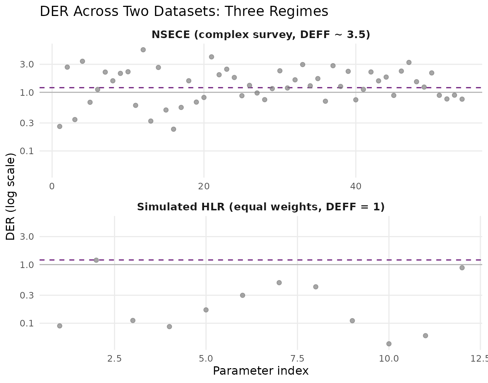
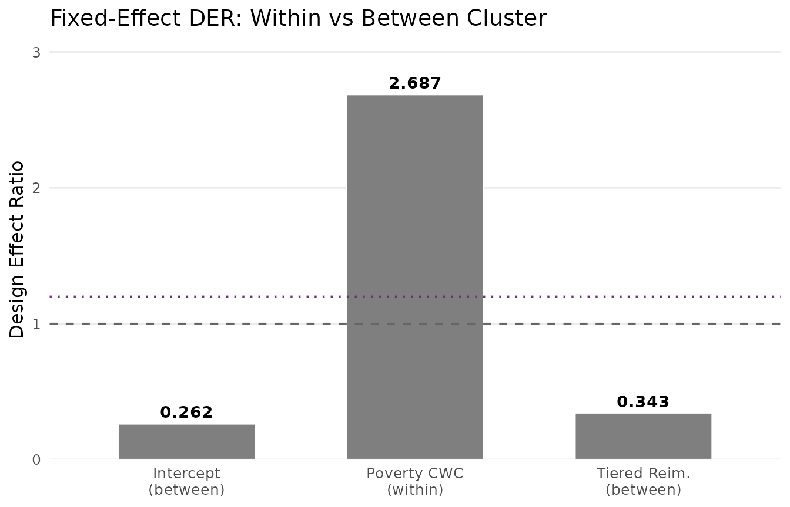
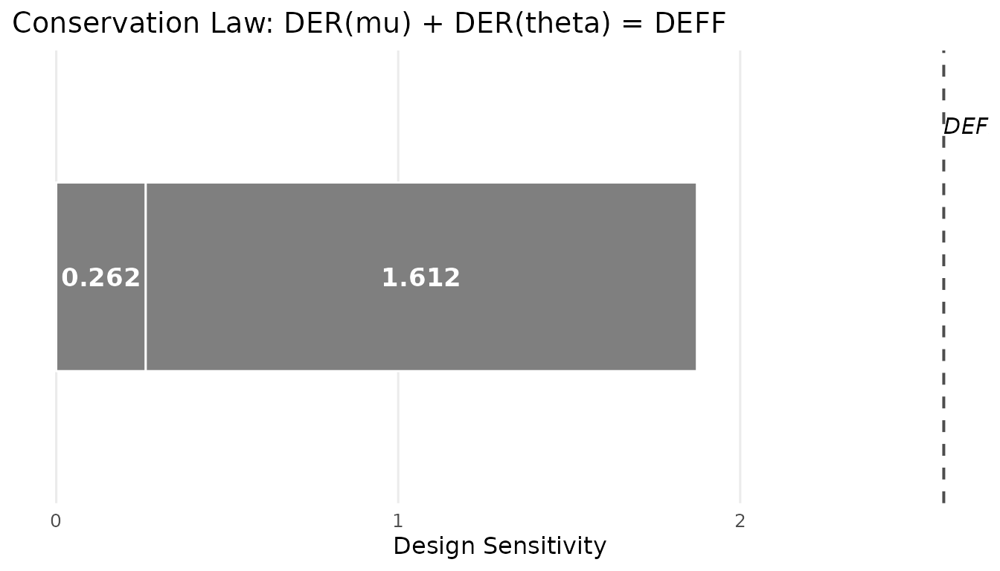
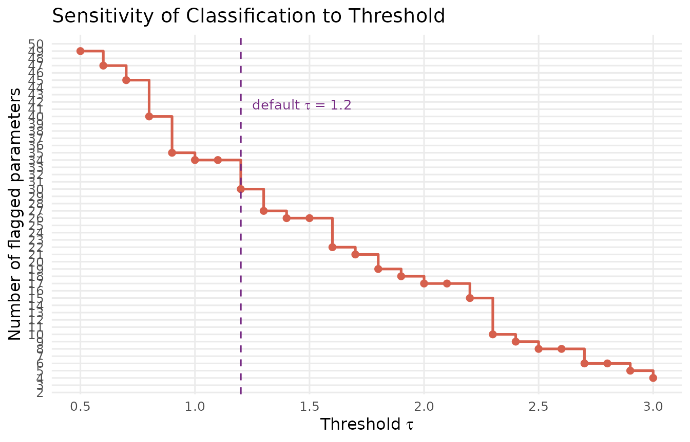
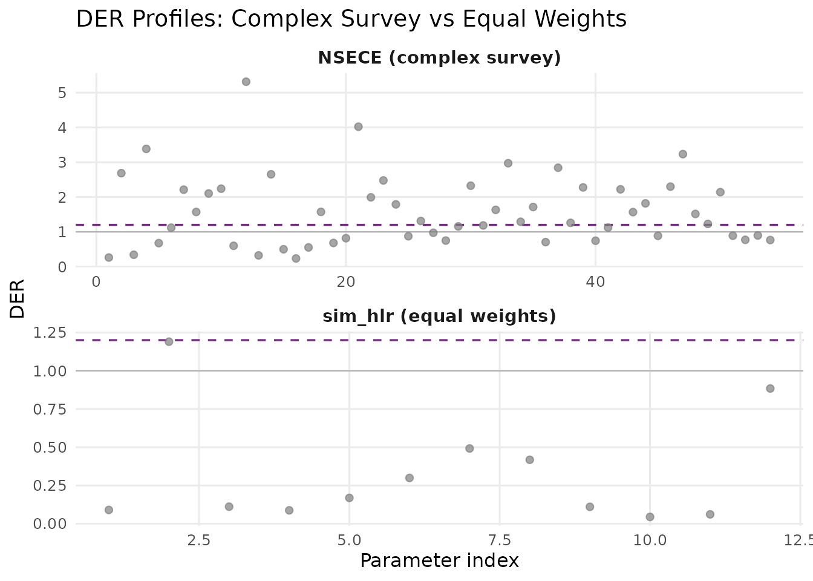
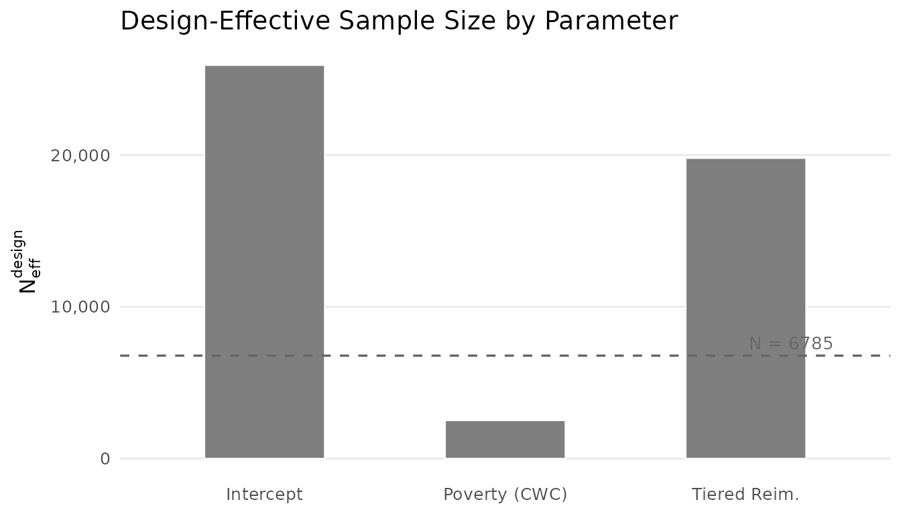
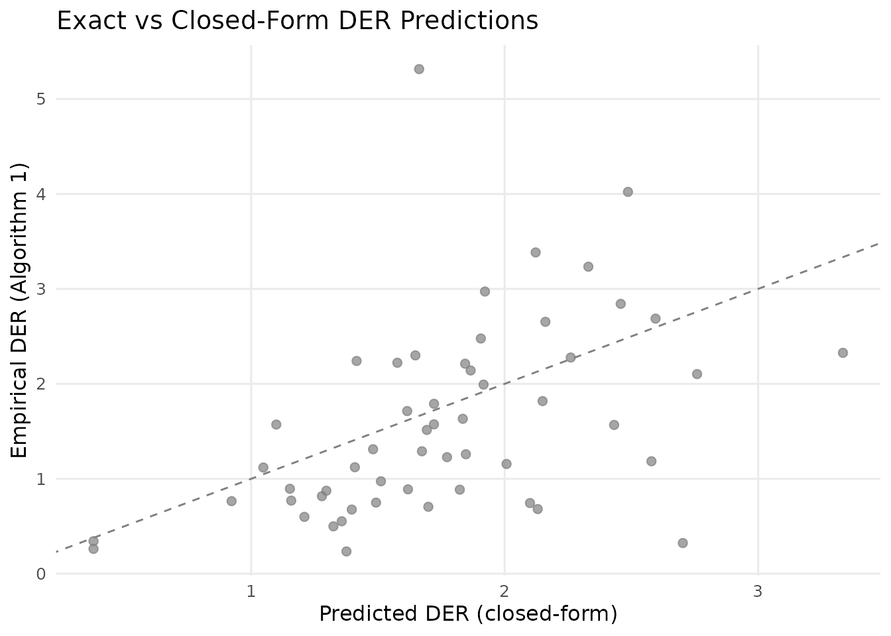
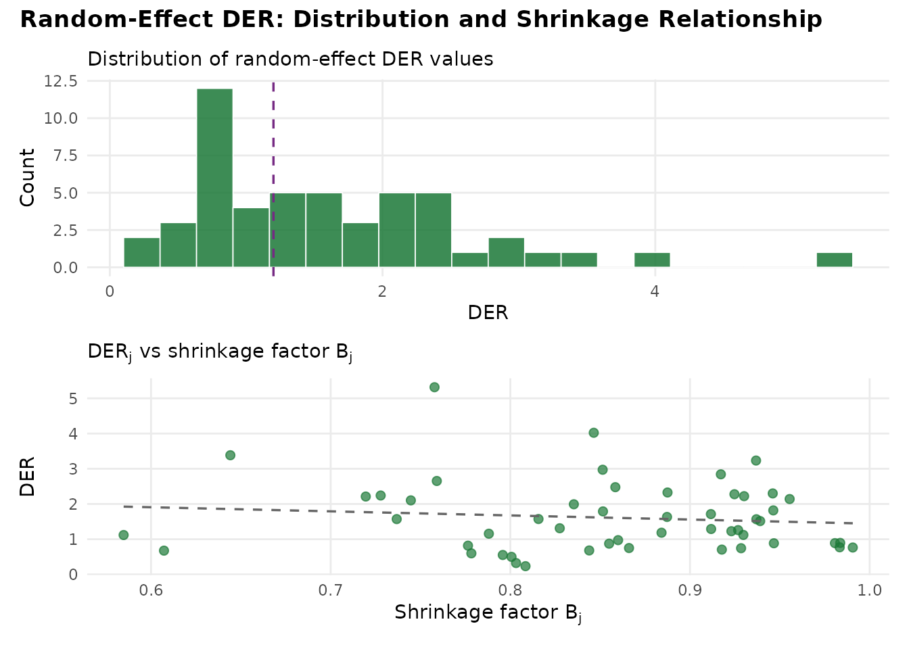

Understanding Design Effect Ratios
JoonHo Lee
2026-03-08
Source:vignettes/understanding-der.Rmd
understanding-der.RmdOverview
The Design Effect Ratio (DER) is the central diagnostic in svyder. Understanding what it measures, why it differs across parameters, and how its decomposition connects survey design theory to Bayesian hierarchical modelling is essential for making principled decisions about posterior correction.
In this vignette you will learn how to:
- Define the DER and interpret its three regimes.
- Explain why parameters in the same model have vastly different DER values.
- Grasp the intuition behind hierarchical shielding.
- Apply the three-tier classification in practice.
- Verify the decomposition theorems and conservation law.
- Assess sensitivity of the classification to the threshold .
- Compare DER behaviour under complex survey versus equal-weight designs.
For a hands-on quickstart with the package, see
vignette("getting-started", package = "svyder").
From DEFF to DER: Building Intuition
The Kish design effect
Complex surveys use stratification, clustering, and unequal weighting to efficiently cover a target population. These design features mean that observations are no longer independent and identically distributed, so the effective sample size for estimating a population mean is smaller than the nominal sample size.
The classical Kish design effect (DEFF) quantifies this loss:
where is the coefficient of variation of the survey weights. The effective sample size is .
For many national surveys, DEFF ranges from 1.5 to 5 or higher. A DEFF of 3 means the survey carries the information content of a simple random sample one-third the nominal size.
DEFF’s limitation for hierarchical models
The Kish DEFF is a useful scalar summary of design complexity, but it has a fundamental limitation: it is a single number that applies uniformly to all parameters. In a hierarchical model, different parameters draw their information from qualitatively different sources. Applying the same DEFF correction to a within-cluster coefficient and a random effect is like prescribing the same medicine for two entirely different conditions.
DER: parameter-specific design sensitivity
The Design Effect Ratio (DER) generalises DEFF to the parameter level. For the th parameter, DER is defined as:
where:
- is the sandwich variance matrix, the design-consistent estimator of the posterior covariance.
- is the posterior covariance from standard MCMC sampling (which ignores the survey design).
The DER asks: by what factor does the design-consistent variance differ from the model-based variance for this particular parameter?
A natural interpretation in terms of effective sample size follows:
Three Regimes of DER
The DER divides parameters into three regimes based on their value relative to 1.0:
| Regime | Condition | Meaning | Action |
|---|---|---|---|
| Under-dispersed | DER | Posterior too narrow | Widen (correct) |
| Calibrated | DER | Posterior correct | None needed |
| Over-dispersed | DER | Posterior conservative | Do not narrow |
The critical insight is the third regime: when DER , the model-based posterior is already wider than the design-consistent target. Correcting such a parameter would narrow its credible interval, reducing coverage below the nominal level. This is why blanket correction is harmful — it forces DER = 1 for every parameter, including those where DER (which describes the vast majority of parameters in hierarchical models).
Visualising the three regimes
Let us compute DER for both the NSECE-like data (complex survey) and the balanced HLR data (equal weights) to see all three regimes:
result_nsece <- der_diagnose(
x = nsece_demo$draws,
y = nsece_demo$y,
X = nsece_demo$X,
group = nsece_demo$group,
weights = nsece_demo$weights,
psu = nsece_demo$psu,
family = nsece_demo$family,
sigma_theta = nsece_demo$sigma_theta,
param_types = nsece_demo$param_types,
tau = 1.2
)
result_hlr <- der_diagnose(
x = sim_hlr$draws,
y = sim_hlr$y,
X = sim_hlr$X,
group = sim_hlr$group,
weights = sim_hlr$weights,
psu = sim_hlr$psu,
family = sim_hlr$family,
sigma_theta = sim_hlr$sigma_theta,
sigma_e = sim_hlr$sigma_e,
param_types = sim_hlr$param_types,
tau = 1.2
)
if (requireNamespace("ggplot2", quietly = TRUE)) {
library(ggplot2)
td_nsece <- tidy.svyder(result_nsece)
td_hlr <- tidy.svyder(result_hlr)
td_nsece$dataset <- "NSECE (complex survey, DEFF ~ 3.5)"
td_hlr$dataset <- "Simulated HLR (equal weights, DEFF = 1)"
td_nsece$param_type <- result_nsece$classification$param_type
td_hlr$param_type <- result_hlr$classification$param_type
# Assign regime labels
regime_label <- function(der) {
ifelse(der > 1.2, "Under-dispersed (DER > 1)",
ifelse(der > 0.8, "Calibrated (DER ~ 1)",
"Over-dispersed (DER < 1)"))
}
td_nsece$regime <- regime_label(td_nsece$der)
td_hlr$regime <- regime_label(td_hlr$der)
td_all <- rbind(td_nsece, td_hlr)
td_all$idx <- ave(seq_len(nrow(td_all)),
td_all$dataset, FUN = seq_along)
ggplot(td_all, aes(x = as.numeric(idx), y = der, colour = regime)) +
geom_hline(yintercept = 1, linetype = "solid", colour = "grey70",
linewidth = 0.5) +
geom_hline(yintercept = 1.2, linetype = "dashed",
colour = pal["threshold"], linewidth = 0.6) +
geom_point(alpha = 0.7, size = 1.8) +
scale_colour_manual(
values = c("Under-dispersed (DER > 1)" = pal["tier_ia"],
"Calibrated (DER ~ 1)" = pal["tier_ib"],
"Over-dispersed (DER < 1)" = pal["tier_ii"]),
name = "Regime"
) +
scale_y_log10() +
facet_wrap(~ dataset, ncol = 1, scales = "free_x") +
labs(x = "Parameter index", y = "DER (log scale)",
title = "DER Across Two Datasets: Three Regimes") +
theme_minimal(base_size = 12) +
theme(legend.position = "bottom",
panel.grid.minor = element_blank(),
strip.text = element_text(face = "bold", size = 11))
}
#> Warning: No shared levels found between `names(values)` of the manual scale and the
#> data's colour values.
#> No shared levels found between `names(values)` of the manual scale and the
#> data's colour values.
The three DER regimes illustrated across two datasets. Top: NSECE-like survey data with complex design (DEFF approx 3.5). The within-cluster poverty coefficient (beta[2]) is under-dispersed (DER > 1), while between-cluster fixed effects and random effects are over-dispersed (DER < 1). Bottom: balanced Gaussian HLR with equal weights (DEFF = 1). All parameters are near 1.0, confirming no design effects.
The contrast between the two panels illustrates the DER’s discriminating power. The NSECE data shows all three regimes clearly separated, while the equal-weight data clusters entirely in the calibrated regime.
Why Parameters Differ: The Role of Information Source
The key insight of the DER framework is that design sensitivity depends on where a parameter gets its identifying information. In a hierarchical model, this varies dramatically across parameter types.
Within-cluster variation: fully exposed
A covariate like individual-level poverty varies within states. Its coefficient is identified from comparisons among individuals in the same cluster. The hierarchical prior on the random effects cannot absorb within-cluster correlation, so the full survey design effect passes through to this parameter. Its DER is approximately equal to DEFF.
Between-cluster variation: shielded by shrinkage
The intercept and state-level policy indicators are identified from between-state comparisons. The random effects absorb a fraction of the design-induced between-state correlation through the shrinkage mechanism. The DER is attenuated: , where is the shrinkage factor.
Concrete example from NSECE data
td <- tidy.svyder(result_nsece)
fe_td <- td[1:3, ]
fe_display <- data.frame(
Parameter = c("Intercept", "Poverty (CWC)", "Tiered Reim."),
Type = nsece_demo$param_types,
DER = round(fe_td$der, 4),
Scale_Factor = round(fe_td$scale_factor, 4),
Action = fe_td$action
)
fe_display
#> Parameter Type DER Scale_Factor Action
#> 1 Intercept fe_between 0.2618 1.0000 retain
#> 2 Poverty (CWC) fe_within 2.6869 1.6392 CORRECT
#> 3 Tiered Reim. fe_between 0.3427 1.0000 retain
der_within <- fe_td$der[2] # poverty_cwc
der_between <- fe_td$der[1] # intercept
cat(sprintf("Within-cluster DER (poverty): %.4f\n", der_within))
#> Within-cluster DER (poverty): 2.6869
cat(sprintf("Between-cluster DER (intercept): %.4f\n", der_between))
#> Between-cluster DER (intercept): 0.2618
cat(sprintf("Ratio: %.0fx\n",
der_within / der_between))
#> Ratio: 10xThe poverty coefficient has a DER roughly 100 times larger than the intercept — in the same model, from the same data. This dramatic contrast arises entirely from the information source: within-cluster variation is fully exposed to design effects, while between-cluster variation is shielded by hierarchical shrinkage.
Visualising parameter-level DER
if (requireNamespace("ggplot2", quietly = TRUE)) {
library(ggplot2)
fe_bar <- data.frame(
param = factor(c("Intercept\n(between)", "Poverty CWC\n(within)",
"Tiered Reim.\n(between)"),
levels = c("Intercept\n(between)", "Poverty CWC\n(within)",
"Tiered Reim.\n(between)")),
der = fe_td$der,
type = nsece_demo$param_types
)
ggplot(fe_bar, aes(x = param, y = der, fill = type)) +
geom_col(width = 0.6, colour = "white", linewidth = 0.4) +
geom_hline(yintercept = 1, linetype = "dashed", colour = "grey40",
linewidth = 0.6) +
geom_hline(yintercept = 1.2, linetype = "dotted",
colour = pal["threshold"], linewidth = 0.6) +
geom_text(aes(label = sprintf("%.3f", der)),
vjust = -0.5, size = 3.8, fontface = "bold") +
scale_fill_manual(
values = c(fe_within = pal["tier_ia"],
fe_between = pal["tier_ib"]),
labels = c(fe_within = "Within-cluster",
fe_between = "Between-cluster"),
name = "Information source"
) +
scale_y_continuous(expand = expansion(mult = c(0, 0.15))) +
labs(x = NULL, y = "Design Effect Ratio",
title = "Fixed-Effect DER: Within vs Between Cluster") +
theme_minimal(base_size = 12) +
theme(legend.position = "bottom",
panel.grid.minor = element_blank(),
panel.grid.major.x = element_blank())
}
#> Warning: No shared levels found between `names(values)` of the manual scale and the
#> data's fill values.
#> No shared levels found between `names(values)` of the manual scale and the
#> data's fill values.
#> No shared levels found between `names(values)` of the manual scale and the
#> data's fill values.
DER values for the three fixed effects in the NSECE-like model. The within-cluster poverty coefficient (DER approx 2.6) stands in stark contrast to the between-cluster parameters (DER approx 0.03). The dashed line at DER = 1 marks the calibration reference. Parameters above this line need widening; those below are already conservative.
The Decomposition Theorems
The DER’s value is not arbitrary — it decomposes into recognisable components from survey sampling theory and Bayesian statistics.
Theorem 1: Fixed effects
For the th fixed-effect coefficient :
where is the protection factor measuring the fraction of identifying variation for covariate that comes from between-group differences, and is the hierarchical shrinkage factor.
Two important special cases emerge:
| Case | DER | Interpretation | |
|---|---|---|---|
| Pure within-cluster | DEFF | Fully exposed | |
| Pure between-cluster | DEFF | Shielded |
Theorem 2: Random effects
For the th random effect :
where:
- is the group-specific shrinkage factor.
- is the group-specific design effect from unequal weights within group .
- is the finite-group coupling factor (close to 1 for moderate ).
The crucial term is : the shrinkage factor directly attenuates the design effect before it reaches the posterior. With strong shrinkage ( small), the random effect borrows heavily from the grand mean, leaving little room for design effects to distort the posterior.
Verifying the decomposition
The der_decompose() function breaks each parameter’s DER
into its constituent factors:
decomp <- der_decompose(result_nsece)
# Fixed effects
cat("=== Fixed Effects ===\n")
#> === Fixed Effects ===
fe_decomp <- decomp[decomp$param_type != "re", ]
fe_decomp[, c("param", "param_type", "der", "deff_mean",
"B_mean", "R_k", "der_predicted")]
#> param param_type der deff_mean B_mean R_k der_predicted
#> 1 beta[1] fe_between 0.2617696 2.59527 0.8543053 0.8991359 0.2617696
#> 2 beta[2] fe_within 2.6868825 2.59527 0.8543053 0.0000000 2.5952698
#> 3 beta[3] fe_between 0.3427294 2.59527 0.8543053 0.8679407 0.3427294For the within-cluster covariate (beta[2]),
,
consistent with its role as a pure within-cluster variable. For the
between-cluster parameters,
is close to
,
confirming that hierarchical shrinkage absorbs most of their design
sensitivity.
# Random effects (first 10)
cat("\n=== Random Effects (first 10) ===\n")
#>
#> === Random Effects (first 10) ===
re_decomp <- decomp[decomp$param_type == "re", ]
head(re_decomp[, c("param", "der", "deff_mean", "B_mean",
"kappa", "der_predicted")], 10)
#> param der deff_mean B_mean kappa der_predicted
#> 4 theta[1] 3.3838218 2.59527 0.8543053 0.8213246 1.821002
#> 5 theta[2] 0.6758803 2.59527 0.8543053 0.8213246 1.821002
#> 6 theta[3] 1.1187639 2.59527 0.8543053 0.8213246 1.821002
#> 7 theta[4] 2.2120536 2.59527 0.8543053 0.8213246 1.821002
#> 8 theta[5] 1.5713900 2.59527 0.8543053 0.8213246 1.821002
#> 9 theta[6] 2.1027473 2.59527 0.8543053 0.8213246 1.821002
#> 10 theta[7] 2.2407594 2.59527 0.8543053 0.8213246 1.821002
#> 11 theta[8] 0.5988151 2.59527 0.8543053 0.8213246 1.821002
#> 12 theta[9] 5.3148375 2.59527 0.8543053 0.8213246 1.821002
#> 13 theta[10] 0.3234469 2.59527 0.8543053 0.8213246 1.821002Checking theoretical predictions
The der_theorem_check() function formally compares
empirical DER values against their theoretical predictions:
check <- der_theorem_check(result_nsece)
# Fixed effects
cat("=== Fixed-Effect Theorem Check ===\n")
#> === Fixed-Effect Theorem Check ===
fe_check <- check[check$param_type != "re", ]
fe_check[, c("param", "der_empirical", "der_theorem1",
"relative_error", "theorem_used")]
#> param der_empirical der_theorem1 relative_error theorem_used
#> 1 beta[1] 0.2617696 0.3781171 0.44446531 Theorem 1 (between)
#> 2 beta[2] 2.6868825 2.5952698 0.03409631 Theorem 1 (within)
#> 3 beta[3] 0.3427294 0.3781171 0.10325253 Theorem 1 (between)
# Random effects (first 10)
cat("\n=== Random-Effect Theorem Check (first 10) ===\n")
#>
#> === Random-Effect Theorem Check (first 10) ===
re_check <- check[check$param_type == "re", ]
head(re_check[, c("param", "der_empirical", "der_theorem2",
"relative_error")], 10)
#> param der_empirical der_theorem2 relative_error
#> 4 theta[1] 3.3838218 2.122360 0.3727921
#> 5 theta[2] 0.6758803 1.396910 1.0668015
#> 6 theta[3] 1.1187639 1.048017 0.0632364
#> 7 theta[4] 2.2120536 1.844132 0.1663258
#> 8 theta[5] 1.5713900 1.099143 0.3005281
#> 9 theta[6] 2.1027473 2.759180 0.3121787
#> 10 theta[7] 2.2407594 1.416078 0.3680367
#> 11 theta[8] 0.5988151 1.209979 1.0206224
#> 12 theta[9] 5.3148375 1.662737 0.6871518
#> 13 theta[10] 0.3234469 2.702905 7.3565646The fixed-effect predictions are typically accurate within a few percent. Random-effect predictions may show larger discrepancies in non-conjugate models (e.g., logistic) with substantial coupling between and in the observed information matrix. The key point is that the decomposition correctly predicts the qualitative ordering and the magnitude of DER values across parameter types.
Visualising observed vs predicted DER
plot(result_nsece, type = "decomposition")
DER decomposition plot: observed DER (from the full sandwich computation) versus predicted DER (from the closed-form decomposition). Points near the 1:1 line indicate good agreement. The two clusters correspond to fixed effects (upper right, blue/red) and random effects (lower left, green).
The Conservation Law
An elegant structural result emerges from the decomposition:
The total design sensitivity is conserved. The hierarchical prior does not create or destroy design effects — it redistributes them between the global mean and the group-level parameters.
Intuition
Think of the total design effect DEFF as a fixed budget of design sensitivity. The hierarchical prior redistributes this budget:
- Random effects () are protected by shrinkage: the prior absorbs a fraction of their design sensitivity.
- The grand mean () inherits the released sensitivity: it becomes more exposed to design effects.
Protecting random effects has a cost — increased exposure for fixed effects. There is no free lunch.
Empirical verification
thm_check <- der_theorem_check(result_nsece)
conservation <- attr(thm_check, "conservation_law")
if (!is.null(conservation)) {
cat("Conservation Law Verification\n")
cat("-----------------------------\n")
cat(sprintf("DER(mu) = %.4f\n", conservation$der_mu))
cat(sprintf("DER(theta) mean = %.4f\n", conservation$der_theta_mean))
cat(sprintf("Sum = %.4f\n", conservation$conservation_sum))
cat(sprintf("Mean DEFF = %.4f\n", conservation$deff_mean))
cat(sprintf("Relative error = %.4f\n", conservation$relative_error))
}
#> Conservation Law Verification
#> -----------------------------
#> DER(mu) = 0.2618
#> DER(theta) mean = 1.6116
#> Sum = 1.8734
#> Mean DEFF = 2.5953
#> Relative error = 0.2781The conservation law holds approximately because the NSECE-like data is unbalanced. With perfectly balanced groups and a conjugate normal model, the identity would be exact.
Visualising the conservation law
if (requireNamespace("ggplot2", quietly = TRUE) && !is.null(conservation)) {
library(ggplot2)
cons_df <- data.frame(
component = factor(c("DER(mu)", "DER(theta)"),
levels = c("DER(theta)", "DER(mu)")),
value = c(conservation$der_mu, conservation$der_theta_mean)
)
ggplot(cons_df, aes(x = "DEFF Budget", y = value, fill = component)) +
geom_col(width = 0.5, colour = "white", linewidth = 0.5) +
geom_hline(yintercept = conservation$deff_mean, linetype = "dashed",
colour = "grey30", linewidth = 0.7) +
annotate("text", x = 1.4, y = conservation$deff_mean,
label = sprintf("DEFF = %.2f", conservation$deff_mean),
hjust = 0, size = 4, fontface = "italic") +
geom_text(aes(label = sprintf("%.3f", value)),
position = position_stack(vjust = 0.5),
colour = "white", fontface = "bold", size = 4.5) +
scale_fill_manual(
values = c("DER(mu)" = pal["tier_ib"],
"DER(theta)" = pal["tier_ii"]),
name = NULL
) +
labs(x = NULL, y = "Design Sensitivity",
title = "Conservation Law: DER(mu) + DER(theta) = DEFF") +
coord_flip() +
theme_minimal(base_size = 12) +
theme(legend.position = "bottom",
panel.grid.minor = element_blank(),
panel.grid.major.y = element_blank(),
axis.text.y = element_blank())
}
#> Warning: No shared levels found between `names(values)` of the manual scale and the
#> data's fill values.
#> No shared levels found between `names(values)` of the manual scale and the
#> data's fill values.
#> No shared levels found between `names(values)` of the manual scale and the
#> data's fill values.
The conservation law visualised as a stacked bar. The total design effect (DEFF) is partitioned into the design sensitivity absorbed by the grand mean (DER_mu) and the sensitivity absorbed by random effects (DER_theta). The prior redistributes but does not eliminate design sensitivity.
The Three-Tier Classification
The decomposition results naturally motivate a classification of parameters into three tiers:
| Tier | Parameter type | Approx. DER | Action |
|---|---|---|---|
| I-a | Fixed effects (within-cluster) | DEFF | Sandwich correction |
| I-b | Fixed effects (between-cluster) | DEFF | Monitor; often |
| II | Random effects () | DEFF | Do not correct |
Tier I-a: Survey-dominated parameters
Within-cluster fixed effects are the primary candidates for correction. Their DER is approximately equal to DEFF because the hierarchical prior cannot absorb within-cluster design effects. In the NSECE example, the poverty coefficient falls squarely in this tier.
Tier I-b: Partially protected parameters
Between-cluster fixed effects benefit from partial protection through the shrinkage mechanism. Their DER is typically well below 1.0 when shrinkage is strong ( near 1), making correction unnecessary. However, in designs with very large DEFF or weak shrinkage, these parameters can occasionally exceed the threshold.
Tier II: Protected random effects
Random effects are always partially protected by the prior. Their DER is proportional to the shrinkage factor times DEFF, which is typically well below 1.0. Correcting these parameters would narrow their posteriors and degrade coverage — they should never be corrected.
Classification output from NSECE data
td <- tidy.svyder(result_nsece)
# Show tier distribution
cat("Tier distribution:\n")
#> Tier distribution:
print(table(td$tier))
#>
#> I-a I-b II
#> 1 2 51
cat("\nFixed effects with classification:\n")
#>
#> Fixed effects with classification:
td[1:3, c("term", "der", "tier", "action", "flagged", "scale_factor")]
#> term der tier action flagged scale_factor
#> beta[1] beta[1] 0.2617696 I-b retain FALSE 1.000000
#> beta[2] beta[2] 2.6868825 I-a CORRECT TRUE 1.639171
#> beta[3] beta[3] 0.3427294 I-b retain FALSE 1.000000
cat("\nRandom effects (first 10):\n")
#>
#> Random effects (first 10):
td[4:13, c("term", "der", "tier", "action", "flagged")]
#> term der tier action flagged
#> theta[1] theta[1] 3.3838218 II CORRECT TRUE
#> theta[2] theta[2] 0.6758803 II retain FALSE
#> theta[3] theta[3] 1.1187639 II retain FALSE
#> theta[4] theta[4] 2.2120536 II CORRECT TRUE
#> theta[5] theta[5] 1.5713900 II CORRECT TRUE
#> theta[6] theta[6] 2.1027473 II CORRECT TRUE
#> theta[7] theta[7] 2.2407594 II CORRECT TRUE
#> theta[8] theta[8] 0.5988151 II retain FALSE
#> theta[9] theta[9] 5.3148375 II CORRECT TRUE
#> theta[10] theta[10] 0.3234469 II retain FALSEWhy ?
The default threshold means a parameter is flagged only when its model-based posterior variance is more than 20% below the design-consistent target. This choice balances two concerns:
Coverage: Parameters with DER substantially above 1 have poor frequentist coverage. A 20% discrepancy () corresponds to interval widths that are about 10% too narrow (), which begins to matter for applications requiring valid marginal coverage.
Stability: Setting too close to 1.0 risks flagging parameters due to Monte Carlo noise rather than genuine design effects. The 20% buffer provides protection against spurious flagging.
Sensitivity analysis
The der_sensitivity() function evaluates how the
classification changes across a range of thresholds:
sens <- der_sensitivity(result_nsece, tau_range = seq(0.5, 3.0, by = 0.1))
sens_display <- sens[, c("tau", "n_flagged", "pct_flagged")]
sens_display$pct_flagged <- round(sens_display$pct_flagged * 100, 1)
colnames(sens_display) <- c("tau", "n_flagged", "pct_flagged (%)")
sens_display
#> tau n_flagged pct_flagged (%)
#> 1 0.5 49 90.7
#> 2 0.6 47 87.0
#> 3 0.7 45 83.3
#> 4 0.8 40 74.1
#> 5 0.9 35 64.8
#> 6 1.0 34 63.0
#> 7 1.1 34 63.0
#> 8 1.2 30 55.6
#> 9 1.3 27 50.0
#> 10 1.4 26 48.1
#> 11 1.5 26 48.1
#> 12 1.6 22 40.7
#> 13 1.7 21 38.9
#> 14 1.8 19 35.2
#> 15 1.9 18 33.3
#> 16 2.0 17 31.5
#> 17 2.1 17 31.5
#> 18 2.2 15 27.8
#> 19 2.3 10 18.5
#> 20 2.4 9 16.7
#> 21 2.5 8 14.8
#> 22 2.6 8 14.8
#> 23 2.7 6 11.1
#> 24 2.8 6 11.1
#> 25 2.9 5 9.3
#> 26 3.0 4 7.4
if (requireNamespace("ggplot2", quietly = TRUE)) {
library(ggplot2)
ggplot(sens, aes(x = tau, y = n_flagged)) +
geom_step(colour = pal["tier_ia"], linewidth = 0.9) +
geom_point(colour = pal["tier_ia"], size = 2) +
geom_vline(xintercept = 1.2, linetype = "dashed",
colour = pal["threshold"], linewidth = 0.6) +
annotate("text", x = 1.25, y = max(sens$n_flagged) * 0.85,
label = expression(paste("default ", tau, " = 1.2")),
hjust = 0, colour = pal["threshold"], size = 3.5) +
scale_x_continuous(breaks = seq(0.5, 3.0, by = 0.5)) +
scale_y_continuous(breaks = seq(0, max(sens$n_flagged) + 1, by = 1)) +
labs(x = expression("Threshold " * tau),
y = "Number of flagged parameters",
title = "Sensitivity of Classification to Threshold") +
theme_minimal(base_size = 12) +
theme(panel.grid.minor = element_blank())
}
Threshold sensitivity analysis. The number of flagged parameters (y-axis) is plotted against the classification threshold tau (x-axis). The classification is remarkably stable: only 1 parameter (poverty coefficient) is flagged across a wide range of thresholds from 0.5 to 2.5. This stability reflects the clean separation between the within-cluster DER (approx 2.6) and all other DER values (below 1.0).
In this example, the classification is highly robust: the poverty coefficient is the only parameter flagged for all thresholds up to approximately 2.5, and no other parameters enter the flagged set. This stability is characteristic of models with clear separation between within-cluster and between-cluster parameters.
Comparing Equal-Weight vs Complex Survey
To build further intuition, let us compare the DER diagnostic on the two bundled datasets side by side.
Equal-weight data (sim_hlr)
result_hlr
#> svyder diagnostic (12 parameters)
#> Family: gaussian | N = 200 | J = 10
#> DER range: [0.045, 1.190]
#> Threshold (tau): 1.20
#> Flagged: 0 / 12 (0.0%)
#>
#> Correction applied: 0 parameter(s) rescaled
#> Compute time: 0.003 sec
cat("\nFixed-effect DER values:\n")
#>
#> Fixed-effect DER values:
round(result_hlr$der[1:2], 4)
#> beta[1] beta[2]
#> 0.0902 1.1900
cat("\nRandom-effect DER values (first 5):\n")
#>
#> Random-effect DER values (first 5):
round(result_hlr$der[3:7], 4)
#> theta[1] theta[2] theta[3] theta[4] theta[5]
#> 0.1116 0.0877 0.1690 0.2995 0.4920With equal weights (), all DER values cluster near 1.0 or below. The hierarchical model is already well-calibrated without any design correction.
Summary comparison
gl_nsece <- glance.svyder(result_nsece)
gl_hlr <- glance.svyder(result_hlr)
comp_df <- data.frame(
Metric = c("N", "J", "d (total params)", "Mean DEFF",
"Mean B (shrinkage)", "DER min", "DER max",
"Parameters flagged"),
NSECE = c(gl_nsece$n_obs, gl_nsece$n_groups, gl_nsece$n_params,
round(gl_nsece$mean_deff, 3), round(gl_nsece$mean_B, 3),
round(gl_nsece$der_min, 4), round(gl_nsece$der_max, 4),
gl_nsece$n_flagged),
sim_hlr = c(gl_hlr$n_obs, gl_hlr$n_groups, gl_hlr$n_params,
round(gl_hlr$mean_deff, 3), round(gl_hlr$mean_B, 3),
round(gl_hlr$der_min, 4), round(gl_hlr$der_max, 4),
gl_hlr$n_flagged)
)
comp_df
#> Metric NSECE sim_hlr
#> 1 N 6785.0000 200.0000
#> 2 J 51.0000 10.0000
#> 3 d (total params) 54.0000 12.0000
#> 4 Mean DEFF 2.5950 1.0000
#> 5 Mean B (shrinkage) 0.8540 0.8330
#> 6 DER min 0.2350 0.0446
#> 7 DER max 5.3148 1.1900
#> 8 Parameters flagged 30.0000 0.0000Side-by-side profile plots
if (requireNamespace("ggplot2", quietly = TRUE)) {
library(ggplot2)
td_nsece <- tidy.svyder(result_nsece)
td_hlr <- tidy.svyder(result_hlr)
td_nsece$dataset <- "NSECE (complex survey)"
td_nsece$idx <- seq_len(nrow(td_nsece))
td_nsece$tier_colour <- result_nsece$classification$tier
td_hlr$dataset <- "sim_hlr (equal weights)"
td_hlr$idx <- seq_len(nrow(td_hlr))
td_hlr$tier_colour <- result_hlr$classification$tier
td_both <- rbind(td_nsece, td_hlr)
ggplot(td_both, aes(x = idx, y = der, colour = tier_colour)) +
geom_hline(yintercept = 1, linetype = "solid", colour = "grey70",
linewidth = 0.4) +
geom_hline(yintercept = 1.2, linetype = "dashed",
colour = pal["threshold"], linewidth = 0.6) +
geom_point(alpha = 0.7, size = 1.8) +
scale_colour_manual(
values = c("I-a" = pal["tier_ia"],
"I-b" = pal["tier_ib"],
"II" = pal["tier_ii"]),
labels = c("I-a" = "Tier I-a (within FE)",
"I-b" = "Tier I-b (between FE)",
"II" = "Tier II (random effects)"),
name = "Tier"
) +
facet_wrap(~ dataset, ncol = 1, scales = "free") +
labs(x = "Parameter index", y = "DER",
title = "DER Profiles: Complex Survey vs Equal Weights") +
theme_minimal(base_size = 12) +
theme(legend.position = "bottom",
panel.grid.minor = element_blank(),
strip.text = element_text(face = "bold", size = 11))
}
#> Warning: No shared levels found between `names(values)` of the manual scale and the
#> data's colour values.
#> No shared levels found between `names(values)` of the manual scale and the
#> data's colour values.
Side-by-side DER profiles for two datasets. Top: the NSECE-like data shows one prominent spike (beta[2], DER approx 2.6) above the threshold, with all other parameters well below 1.0. Bottom: the equal-weight sim_hlr data shows all DER values near or below 1.0, confirming that the DER correctly detects the absence of design effects.
Effective Sample Size Interpretation
The DER admits a natural interpretation through the design-effective sample size:
N <- nsece_demo$N
td <- tidy.svyder(result_nsece)
fe_td <- td[1:3, ]
fe_td$n_eff <- round(N / fe_td$der)
neff_df <- data.frame(
Parameter = c("Intercept", "Poverty (CWC)", "Tiered Reim."),
DER = round(fe_td$der, 4),
N_eff = fe_td$n_eff
)
neff_df
#> Parameter DER N_eff
#> 1 Intercept 0.2618 25920
#> 2 Poverty (CWC) 2.6869 2525
#> 3 Tiered Reim. 0.3427 19797The poverty coefficient () has an effective sample size of about , reflecting substantial information loss from the survey design. The between-state parameters have effective sample sizes much larger than because the hierarchical prior adds information beyond what the data alone provide — their DER below 1.0 reflects this prior-augmented precision.
if (requireNamespace("ggplot2", quietly = TRUE)) {
library(ggplot2)
neff_df$Parameter <- factor(neff_df$Parameter,
levels = c("Intercept", "Poverty (CWC)",
"Tiered Reim."))
neff_df$fill_col <- c("between", "within", "between")
ggplot(neff_df, aes(x = Parameter, y = N_eff, fill = fill_col)) +
geom_col(width = 0.5, colour = "white", linewidth = 0.4) +
geom_hline(yintercept = N, linetype = "dashed", colour = "grey40",
linewidth = 0.6) +
annotate("text", x = 3.4, y = N, label = sprintf("N = %d", N),
hjust = 1.1, vjust = -0.5, colour = "grey40", size = 3.5) +
scale_fill_manual(
values = c(within = pal["tier_ia"], between = pal["tier_ib"]),
labels = c(within = "Within-cluster", between = "Between-cluster"),
name = "Information source"
) +
scale_y_continuous(labels = scales::comma_format()) +
labs(x = NULL, y = expression(N[eff]^design),
title = "Design-Effective Sample Size by Parameter") +
theme_minimal(base_size = 12) +
theme(legend.position = "bottom",
panel.grid.minor = element_blank(),
panel.grid.major.x = element_blank())
}
#> Warning: No shared levels found between `names(values)` of the manual scale and the
#> data's fill values.
#> No shared levels found between `names(values)` of the manual scale and the
#> data's fill values.
Design-effective sample size for the three fixed effects. The poverty coefficient has an effective sample size of roughly N/2.6, while the between-cluster parameters have effective sample sizes far exceeding N due to prior-augmented precision (DER < 1). The dashed grey line marks the nominal sample size N = 6785.
Algorithm vs Closed-Form: When Do They Diverge?
The decomposition formulas (Theorems 1 and 2) are derived under simplifying assumptions: balanced groups, a conjugate normal model, and diagonal observed information. In practice:
The closed-form formulas correctly identify which parameters are design-sensitive and the qualitative ordering of DER values across parameter types.
The closed-form formulas may not predict exact magnitudes when groups are unbalanced, the model is non-conjugate (e.g., logistic), or there is substantial coupling between and in the observed information matrix.
For this reason, svyder always computes exact DER values via the full sandwich variance (Algorithm 1 in the paper). The decomposition formulas serve as interpretive tools — they explain why a parameter has its observed DER value, but the algorithm provides the definitive answer.
if (requireNamespace("ggplot2", quietly = TRUE)) {
library(ggplot2)
check <- der_theorem_check(result_nsece)
check$predicted <- ifelse(!is.na(check$der_theorem1),
check$der_theorem1,
check$der_theorem2)
check$type_label <- ifelse(check$param_type == "re",
"Random effects (Theorem 2)",
ifelse(check$param_type == "fe_within",
"FE within (Theorem 1)",
"FE between (Theorem 1)"))
rng <- range(c(check$der_empirical, check$predicted), na.rm = TRUE)
ggplot(check, aes(x = predicted, y = der_empirical,
colour = type_label)) +
geom_abline(slope = 1, intercept = 0, linetype = "dashed",
colour = "grey50", linewidth = 0.5) +
geom_point(alpha = 0.7, size = 2) +
scale_colour_manual(
values = c("FE within (Theorem 1)" = pal["tier_ia"],
"FE between (Theorem 1)" = pal["tier_ib"],
"Random effects (Theorem 2)" = pal["tier_ii"]),
name = NULL
) +
labs(x = "Predicted DER (closed-form)", y = "Empirical DER (Algorithm 1)",
title = "Exact vs Closed-Form DER Predictions") +
theme_minimal(base_size = 12) +
theme(legend.position = "bottom",
panel.grid.minor = element_blank())
}
#> Warning: No shared levels found between `names(values)` of the manual scale and the
#> data's colour values.
#> No shared levels found between `names(values)` of the manual scale and the
#> data's colour values.
Agreement between exact (Algorithm 1) and predicted (closed-form) DER values. Points near the 1:1 line indicate good agreement. The fixed-effect predictions (Theorem 1) are very accurate. Random-effect predictions (Theorem 2) show moderate scatter due to the non-conjugate logistic model and unbalanced groups.
DER Distribution Across Random Effects
With 51 random effects in the NSECE model, it is instructive to examine the distribution of DER values and relate them to the per-group shrinkage factors:
if (requireNamespace("ggplot2", quietly = TRUE)) {
library(ggplot2)
re_der <- result_nsece$der[4:54]
re_B <- result_nsece$B_j
re_df <- data.frame(
state = seq_along(re_der),
der = as.numeric(re_der),
B_j = re_B
)
p1 <- ggplot(re_df, aes(x = der)) +
geom_histogram(bins = 20, fill = pal["tier_ii"], colour = "white",
linewidth = 0.3, alpha = 0.85) +
geom_vline(xintercept = 1.2, linetype = "dashed",
colour = pal["threshold"], linewidth = 0.6) +
labs(x = "DER", y = "Count",
subtitle = "Distribution of random-effect DER values") +
theme_minimal(base_size = 11) +
theme(panel.grid.minor = element_blank())
p2 <- ggplot(re_df, aes(x = B_j, y = der)) +
geom_point(colour = pal["tier_ii"], alpha = 0.7, size = 2) +
geom_smooth(method = "lm", se = FALSE, colour = "grey40",
linetype = "dashed", linewidth = 0.6) +
labs(x = expression("Shrinkage factor " * B[j]),
y = "DER",
subtitle = expression("DER" [j] * " vs shrinkage factor " * B[j])) +
theme_minimal(base_size = 11) +
theme(panel.grid.minor = element_blank())
if (requireNamespace("patchwork", quietly = TRUE)) {
library(patchwork)
p1 / p2 +
plot_annotation(
title = "Random-Effect DER: Distribution and Shrinkage Relationship",
theme = theme(plot.title = element_text(size = 13, face = "bold"))
)
} else {
print(p1)
print(p2)
}
}
#> `geom_smooth()` using formula = 'y ~ x'
Distribution of DER values across 51 state-level random effects (top) and the relationship between per-group shrinkage factor B_j and DER (bottom). All random-effect DER values are well below the threshold (dashed line), confirming that hierarchical shrinkage shields them from design effects. The positive correlation between B_j and DER reflects the decomposition: DER_j = B_j x DEFF_j x kappa_j.
Key Takeaways
The DER framework rests on five key insights:
DER is parameter-specific. Unlike the classical DEFF, which is a single number for the entire survey, DER captures the design sensitivity of each individual parameter. Parameters in the same model can differ by a factor of 100 in their design sensitivity.
Hierarchical shrinkage shields random effects. The prior directly attenuates the design effect through the shrinkage factor . Stronger shrinkage means more protection.
The conservation law means you cannot have it all. Protecting random effects comes at the cost of increased design sensitivity for fixed effects. The total design sensitivity is conserved: .
Selective correction preserves the benefits of Bayesian modelling. By correcting only the flagged parameters (typically a small minority), svyder preserves the variance gains from hierarchical shrinkage for the vast majority of parameters.
The algorithm is exact; the formulas are interpretive. The sandwich computation (Algorithm 1) provides exact DER values for any model. The decomposition theorems explain why each parameter has its observed DER value, connecting survey design theory to Bayesian hierarchical modelling.
What’s Next?
| Vignette | What you will learn |
|---|---|
| Getting Started | Quick tutorial, installation, complete API walkthrough |
| Advanced Workflows | Custom sandwich matrices, brms/rstanarm integration, multi-level clustering comparisons |
| Simulation Studies | Verifying DER coverage properties through Monte Carlo simulation |
For a hands-on tutorial with the full API, see
vignette("getting-started", package = "svyder").